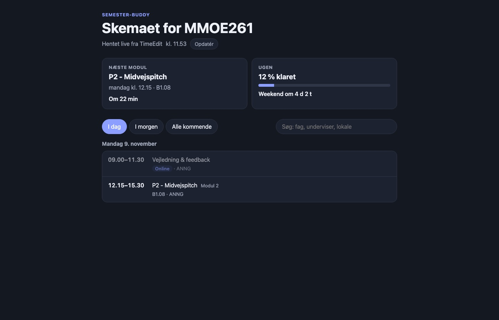

3. Semester
Front-End Projekt
Semester-buddy som hjemmeside: forklaring af Discord-botten, live skema og personlige studieopgaver samlet ét sted.
Se hjemmesiden Se skemaet
Opgaven
Front-End Projekt var et individuelt valgfagsprojekt, hvor jeg skulle lave og præsentere en datadreven front-end-løsning. Den skulle hente data fra et API, bruge teknologi ud over almindelig JavaScript og kunne vises live.
Idéen
Jeg havde allerede Discord-botten Semester-buddy, så jeg tog udgangspunkt i den frem for at finde på et helt nyt system. Projektet blev samlet i to spørgsmål: Hvor skal jeg være? Hvad skal jeg nå?
Botten er god til hurtige svar i den kanal, holdet allerede bruger. Hjemmesiden giver et samlet overblik, man selv kan søge og filtrere i.
Løsningen
Skemaet henter data fra TimeEdit og er bygget med Vue 3. Siden viser næste modul med nedtælling, ugens fremskridt, dagfiltre og søgning efter fag, undervisere, lokaler og online-moduler. Der er også visninger til indlæsning, fejl og ingen resultater.
Da min underviser havde set projektet, foreslog vedkommende, at jeg også viste Discord-botten. Derfor samlede jeg skemaet på den side, der allerede forklarede botten.
Fra at læse data til fuld CRUD
Skemaet kunne kun læse data, så jeg tilføjede Mine studieopgaver, hvor man kan oprette, læse, redigere og slette sine egne opgaver. De gemmes i browseren med localStorage, så de kun ligger på den enhed, man bruger.
Test og rettelser
Jeg afprøvede de handlinger, der skulle vises i demoen, og det afslørede to fejl. Søgning på “online” fandt ikke modulerne, fordi ordet blev fjernet fra titlen, og der stod en løs separator foran underviseren på nogle moduler. Begge dele blev rettet.
AI og min rolle
Jeg bestemte retningen: koblingen til botten, at alt skulle samles på ét link, kravet om fuld CRUD og den korte, visuelle præsentation. Claude og Codex skrev koden ud fra mine valg og hjalp med at forklare den.
Det lærte jeg
- At hente data fra et API og omforme dem, så de kan vises.
- At holde en visning reaktiv med Vue.
- Forskellen på at filtrere data og at lave nye API-kald.
- Forskellen på kun at læse data og fuld CRUD med lokal lagring.
Projektet er bestået.